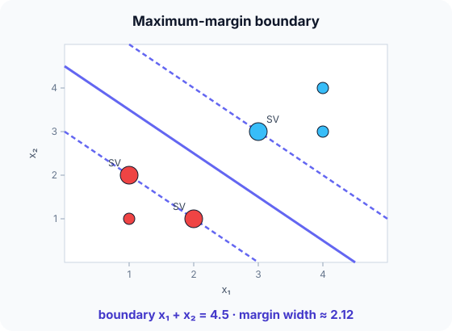

Prerequisites
- Linear classifiers: $w^\top x + b$.
- Vector length $\lVert w \rVert$ and dot products.
- Distance from a point to a line.
The analogy
Everyday analogy
Imagine laying a road between two villages so that it stays as far as possible from the nearest house on each side. Only the houses at the very edge of each village matter; houses further back could move without changing the road.
An SVM lays that road between two classes. The edge houses are the support vectors, and the width of the road is the margin.
How it works
Model: predict the class by the sign of $f(x) = w^\top x + b$. Points with $f(x) = \pm 1$ lie on the edges of the street; the margin width is $2 / \lVert w \rVert$. Scale features first.
Start with the widest street by hand
Red: (1, 1), (1, 2), (2, 1). Blue: (3, 3), (4, 3), (4, 4). Look at $s = x_1 + x_2$ for each point. Predict, then open "Check".
Example: predict before you read
Step 1. Compute $s$ for every point. Which red point is closest to the blue class, and which blue point is closest to red?
Check
Red: 2, 3, 3. Blue: 6, 7, 8. The closest are red (1, 2) and (2, 1) with $s = 3$, and blue (3, 3) with $s = 6$.
Step 2. Cover the next line and guess: where is the widest street, and what is the boundary?
Check
Between the lines $s = 3$ and $s = 6$, so the boundary runs down the middle: $x_1 + x_2 = 4.5$.
Step 3. The SVM writes it as $w = (2/3, 2/3)$, $b = -3$. Predict $f$ at (3, 3) and at (1, 2), and the margin width.
Check
$f(3, 3) = 4 - 3 = 1$ and $f(1, 2) = 2 - 3 = -1$: exactly on the edges. Width $= 2/\lVert w \rVert = 2/(0.943) \approx 2.12$.

Quick recall: Before reading further, cover the text above and say out loud: which points determine the SVM boundary?
Check your answer
Only the support vectors, the points on the edges of the margin. Moving any other point (without crossing the margin) changes nothing.
Finish the picture: soft margins and kernels
Real data is rarely this clean.
- A red point appears at (3.5, 3.5). Predict what a hard-margin SVM can do.
Check
No line separates the classes any more, so a hard margin is impossible. A soft-margin SVM allows a few violations, each paying a penalty weighted by C.
- Red points inside a ring of blue points. Predict how an SVM can separate them.
Check
With a kernel (e.g. RBF), the SVM works as if the points were mapped to a higher-dimensional space, where a flat boundary exists; back in 2D it looks like a circle.
Quick recall: Without scrolling up, say out loud: what does the parameter C control in a soft-margin SVM?
Check your answer
The trade-off between a wide margin and few margin violations: large C punishes violations (narrower margin, risk of overfitting), small C allows more (wider margin, more bias).
Full worked calculation
The trained SVM from the page is $w = (\tfrac23, \tfrac23)$, $b = -3$, i.e. the boundary $x_1 + x_2 = 4.5$. Here every number is checked: the score of each point, its distance to the boundary, the margin, and what a misplaced point costs.
| Point | Class $y$ | $f(x) = w^\top x + b$ | $y \cdot f(x)$ | Distance $f/\lVert w\rVert$ | Role |
|---|---|---|---|---|---|
| (1, 1) | −1 | −1.667 | 1.667 | −1.768 | outside the margin |
| (1, 2) | −1 | −1 | 1 | −1.061 | support vector |
| (2, 1) | −1 | −1 | 1 | −1.061 | support vector |
| (3, 3) | +1 | 1 | 1 | 1.061 | support vector |
| (4, 3) | +1 | 1.667 | 1.667 | 1.768 | outside the margin |
| (4, 4) | +1 | 2.333 | 2.333 | 2.475 | outside the margin |
-
1Score of a point
$$f(3, 3) = \tfrac23 \cdot 3 + \tfrac23 \cdot 3 - 3 = 4 - 3 = 1, \qquad f(1, 2) = \tfrac23 \cdot 3 - 3 = -1$$The sign gives the class: positive is blue, negative is red. The support vectors sit exactly at $f = \pm 1$; that is how the SVM scales $w$ and $b$.
-
2Check the constraints
$$y_i f(x_i) \ge 1 \text{ for all six points: } 1.667, 1, 1, 1, 1.667, 2.333$$Multiplying by the label makes "correct and outside the street" the same as "at least 1". All six pass, so this is a valid hard-margin solution. The three points with exactly 1 are the support vectors.
-
3Length of w
$$\lVert w \rVert = \sqrt{(\tfrac23)^2 + (\tfrac23)^2} = \tfrac23\sqrt 2 \approx 0.943$$The score $f$ is not a distance yet. Dividing by $\lVert w \rVert$ converts it into an actual geometric distance.
-
4Distance of each point to the boundary
$$\text{dist}(3, 3) = \frac{f}{\lVert w \rVert} = \frac{1}{0.943} = 1.061, \qquad \text{dist}(4, 4) = \frac{2.333}{0.943} = 2.475$$Check (3, 3) by geometry: the closest point on $x_1 + x_2 = 4.5$ is (2.25, 2.25), and $\sqrt{0.75^2 + 0.75^2} = 1.061$. The formula and the picture agree.
-
5Margin width
$$\text{margin} = \frac{2}{\lVert w \rVert} = \frac{2}{0.943} \approx 2.121$$The street runs from $f = -1$ to $f = +1$, i.e. 1.061 on each side. Training minimises $\lVert w \rVert^2$ precisely to make this number as large as possible.
-
6Classify a new point
$$f(2, 2) = \tfrac23 \cdot 4 - 3 = -0.333 \;\Rightarrow\; \text{red, but inside the street (distance } 0.354)$$The sign decides the class; $|f| < 1$ warns that the point lies inside the margin, so the decision is less certain.
-
7Cost of a violating point (soft margin)
$$\text{red point } (3.5, 3.5): \; f = 1.667, \quad \text{hinge} = \max(0,\; 1 - y f) = \max(0,\; 1 + 1.667) = 2.667$$A soft-margin SVM pays a hinge loss for every point with $y f < 1$, multiplied by $C$. A large $C$ makes this point expensive, so the boundary bends towards it; a small $C$ accepts the mistake and keeps a wide street.
What the numbers tell us
All the SVM needs at prediction time is one dot product: $f(x) = w^\top x + b$. Sign = class, $|f|/\lVert w \rVert$ = distance.
Here the margin is 2.121 and only three points (the support vectors) touch it. The hinge loss shows how a soft margin trades street width against mistakes.
The rule in plain words
Find $w, b$ that separate the classes with the largest margin: minimise $\tfrac12 \lVert w \rVert^2$ subject to $y_i (w^\top x_i + b) \ge 1$ for every training point.
Allow violations with slack (soft margin, parameter C) for noisy data, and use kernels for non-linear boundaries.
Quick recall: Before you read the code, describe how to classify a new point with a trained linear SVM, in your own words. Then check below.
Check your answer
Compute $w^\top x + b$; if it is positive, predict one class, otherwise the other. Its size tells you how far from the boundary the point is.
The code
Read this code after you have found the boundary by hand. It will make more sense.
double svm_decision(double w[], double b, double x[], int d) { /* sign = predicted class */
double s = b;
for (int j = 0; j < d; j++) s += w[j] * x[j];
return s; /* |s| ~ distance from boundary */
}
double margin_width(double w[], int d) { /* 2 / ||w|| */
double nn = 0;
for (int j = 0; j < d; j++) nn += w[j] * w[j];
return 2 / sqrt(nn);
}Definition
What you just did, in one line: a support vector machine is a classifier that finds the separating boundary with the maximum margin; the training points on the margin are the support vectors.
flowchart TD
A{"Are the classes separable by a line?"} -->|"yes, cleanly"| H["hard-margin SVM"]
A -->|"almost, some noise"| S["soft-margin SVM, tune C"]
A -->|"no, curved boundary"| K["kernel SVM (RBF, polynomial), tune C and gamma"]
How costly is it?
Quick recall: Before looking at the formula, predict: why does the SVM minimise $\lVert w \rVert$?
Check your answer
The margin width is $2/\lVert w \rVert$, so a smaller $\lVert w \rVert$ means a wider street.
The hard-margin training problem:
$$\min_{w, b} \; \tfrac12 \lVert w \rVert^2 \quad \text{subject to} \quad y_i\,(w^\top x_i + b) \ge 1 \;\; \forall i, \qquad \text{margin} = \frac{2}{\lVert w \rVert}$$For our points, $w = (2/3, 2/3)$: $\lVert w \rVert = 0.943$, margin $= 2.12$, which is exactly the distance between the lines $x_1 + x_2 = 3$ and $x_1 + x_2 = 6$.
| Phase | Cost | Why |
|---|---|---|
| Training, linear SVM | about $O(nd)$ per pass | Specialised solvers (e.g. liblinear) |
| Training, kernel SVM | between $O(n^2)$ and $O(n^3)$ | Works with all pairs of points |
| Prediction, linear | $O(d)$ | One dot product |
| Prediction, kernel | $O(\#\text{SV} \cdot d)$ | One kernel per support vector |
Best for: small to medium datasets with many features, such as text, or clear margins between classes.
- Pro: Maximum margin generalises well, even in high dimensions.
- Pro: Kernels give flexible non-linear boundaries.
- Con: Kernel SVMs scale poorly beyond tens of thousands of examples.
- Con: Needs feature scaling and tuning of C (and gamma); no native probabilities.
Warning
SVMs are very sensitive to feature scale: a feature measured in thousands dominates $\lVert w \rVert$ and the margin. Always standardize features first.
Exam tip
Given $w$ and $b$, compute $f(x)$ for each point: $|f| = 1$ means support vector, $|f| > 1$ outside the margin, $|f| < 1$ inside it. Margin width is $2/\lVert w \rVert$.
Common mistakes
- Saying all training points define the boundary; only the support vectors do.
- Forgetting to scale features.
- Confusing large C (narrow margin, low bias) with small C (wide margin, more bias).
Try it yourself
Exercise 1 (warm-up)
With $w = (2/3, 2/3)$, $b = -3$, classify the new point (2, 2) and say whether it is inside the margin.
Hint
Compute $f$.
Answer
$f = 8/3 - 3 \approx -0.33$: red side, and $|f| < 1$, so it lies inside the margin.
Exercise 2 (a bit harder)
A linear SVM has $w = (3, 4)$. What is the margin width? If you double $w$ and $b$, does the boundary change? Write your answer down before you open it.
Show answer
$\lVert w \rVert = 5$, so the width is $2/5 = 0.4$. Doubling $w$ and $b$ leaves the boundary $w^\top x + b = 0$ unchanged, but the canonical margin lines $f = \pm 1$ move closer together; the SVM fixes this scale by requiring $y_i f(x_i) \ge 1$ with equality at the support vectors.
Did you know?
Did you know?
Vapnik and Chervonenkis developed the theory in the 1960s; the modern soft-margin SVM with kernels was published by Cortes and Vapnik in 1995.
In the early 2000s, SVMs held records in handwritten-digit and text classification until deep neural networks overtook them around 2012.
Key points to remember
If you remember one thing from each line, remember the because.
- Only support vectors matter because the margin is set by the closest points of each class.
- Minimising $\lVert w \rVert$ widens the margin because the margin width is $2/\lVert w \rVert$.
- Soft margins handle noise because they let some points violate the margin at a cost set by C.
- Kernels give curved boundaries because they act as a flat boundary in a higher-dimensional space.
- Scaling is essential because the margin is measured in raw feature units.
Self-check questions
Answer these in order, out loud. They follow the page, so your answers become the script of your video.
- How is an SVM like laying a road between two villages?
Sample answer
The road stays as far as possible from the nearest houses on each side, and only those edge houses decide where it goes.
- Find the SVM boundary for red (1, 1), (1, 2), (2, 1) and blue (3, 3), (4, 3), (4, 4).
Sample answer
The closest points have $x_1 + x_2 = 3$ (red) and $6$ (blue), so the boundary is $x_1 + x_2 = 4.5$, with support vectors (1, 2), (2, 1), (3, 3).
- Why does
margin_widthreturn $2/\lVert w \rVert$?A good answer uses the lines $f = \pm 1$.
Sample answer
The margin edges are $w^\top x + b = 1$ and $= -1$; the distance between these parallel lines is $2/\lVert w \rVert$.
- So what is an SVM, in one sentence?
Sample answer
A classifier that chooses the separating boundary with the widest margin, determined by the support vectors.
- Why does a wide margin help generalisation?
A good answer mentions new points near the boundary.
Sample answer
New points that fall near the training data still land on the correct side, because the boundary keeps a large safety distance from both classes.
- What do linear and kernel SVMs cost?
Sample answer
Linear: roughly $O(nd)$ training and $O(d)$ prediction. Kernel: $O(n^2)$ to $O(n^3)$ training and a kernel per support vector at prediction.
- Give two pros and two cons.
Sample answer
Pros: strong generalisation, kernels for non-linear boundaries. Cons: poor scaling to huge datasets, needs scaling and tuning of C and gamma.
- If you had to teach this to a friend in 2 minutes, what would you leave out, and why?
Sample answer
I'd leave out the optimisation formula and kernels. I'd keep the road analogy, the 6-point example with its support vectors, and "widest street, only edge points matter".
External resources
- scikit-learn: Support vector machines: linear and kernel SVMs with examples.
- Wikipedia: Support vector machine: the optimisation problem and kernels.
- MIT OCW 6.034 Artificial Intelligence: Patrick Winston's famous SVM lecture.
Videos
- YouTube search: StatQuest SVM: StatQuest's main ideas video.